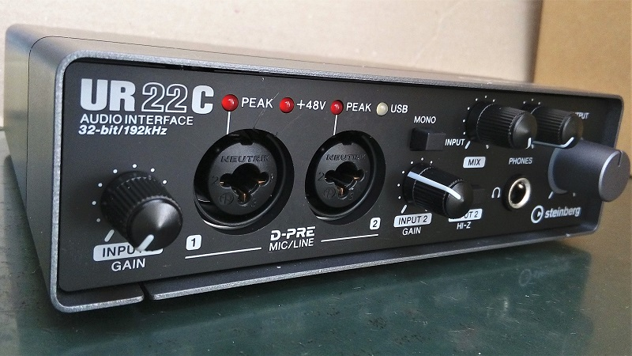
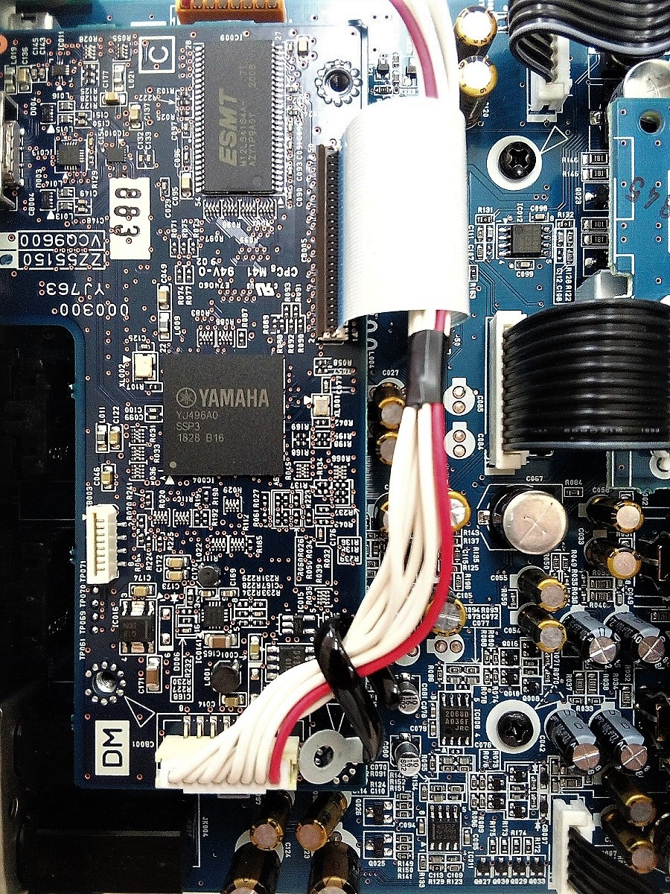
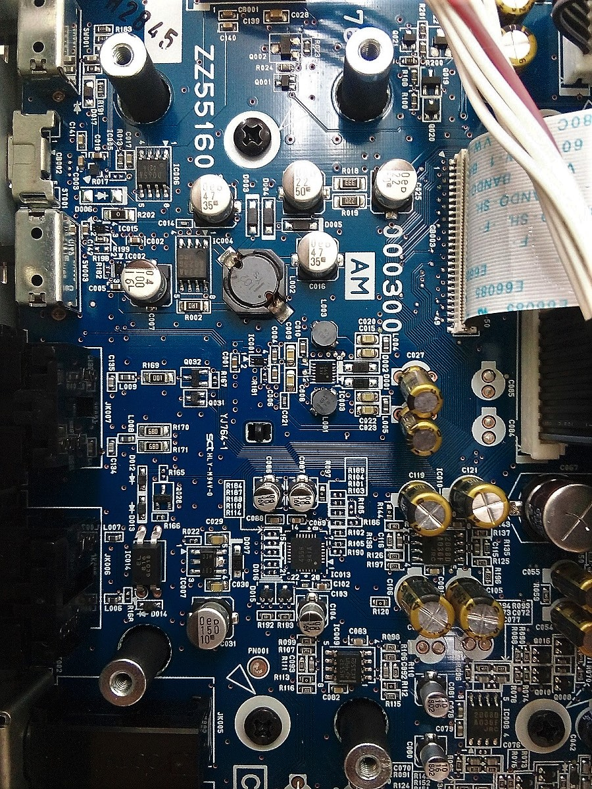
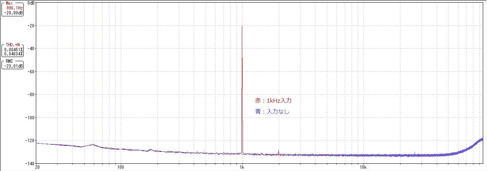
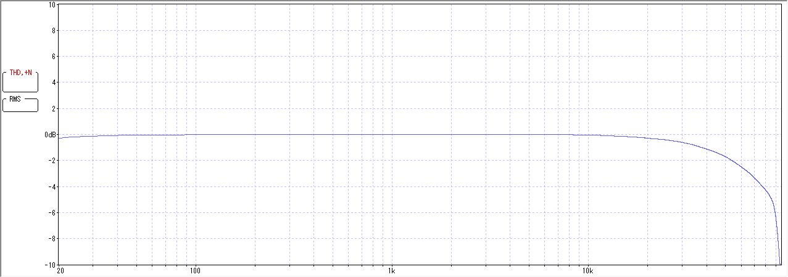

Steinberg UR22C 分解・特性測定
2020年11月11日 カテゴリー：修理・改造・解析

サンプリングレート192kHzでの録音環境を手に入れたかったため、Steinberg UR22Cというオーディオインターフェイスを購入しました。簡単な分解と特性測定を行っておきます。
【分解】
▽内部写真（このロシア語ページではUR44Cの内部写真が掲載されています。）
 
完全な分解は行っていませんが、以下のICが確認できました。
・DSP YAMAHA YJ496
・SDRAM M12L64164A
・オーディオコーデック AK4558
・USB電源スイッチIC BD2065AFJ
・DC/DCコンバータIC NJM2374A
・オペアンプ NE5532 NJM2068 NJM4580
・スイッチング電圧レギュレータ BD9329EFJ
・USB Type-C ポート保護IC TPD6S300
Nichicon FWやELNA等、電解コンデンサにスルーホール部品が使われているのが意外でした。設計者のこだわりの部分なのかもしれません。
【特性測定】
MAIN OUTPUT LからMIC/LINE 2入力（HI-Z）へモノラルケーブルを接続した状態で特性を測定しました。おおよその絶対的電圧レベルをわかりやすくするため、出力レベルが約0.1Vrms（=-20dBV）、WaveSpectraのMax表示が-20dB（RMS表示-23dB）となるように合わせています。
＜サンプリングレート設定＞
dspMixFx UR-Cソフトを起動→右上の歯車のマーク→Control Panel→Steinberg UR22Cタブ→Sample Rate: 192kHz
＜MAIN OUTPUT＞
PC 再生VOL: 100
OUTPUTノブ: 12時
MIXノブ: DAW側最大の位置
出力インピーダンス: 150Ω（マニュアルより）
＜MIC/LINE 2＞
PC 録音VOL: 100
INPUT2 GAINノブ: 10時と少し（本体写真参照）
INPUT2 HI-Zスイッチ: オン
入力インピーダンス: 1MΩ（マニュアルより） 100pF（実測値）
＜WaveGene設定＞
サンプリング周波数: 192000 ビット長: 32 チャンネル数: Stereo
・歪率測定 サイン波 1kHz FFT用に最適化（FFTサンプル数16384） -12.7dB
・周波数特性測定 ユーザー波形 FLATSWEEP_016384.WAV -12.7dB
※WaveGeneサイトにあるサンプリングレート48kHzのユーザー波形サンプルを使っています。本来は192kHz用の波形を用意すべきですが、20kHz以上の周波数も問題ないようなのでそのまま利用しています。
＜WaveSpectra設定＞
Rch Avg: 300
[FFT] サンプルデータ数: 16384 窓関数: なし（矩形）
[再生/録音] フォーマット: 192000 s/s 32 bit Stereo
▽歪率・ノイズレベル

▽周波数特性

マニュアル通り、20Hz、20kHzで-0.3dBくらいとなっています。
---2024年9月17日追記---
出力が1.4dB程度ズレていたので改定（実際は0.1Vrmsではなく0.117Vrms出ていた）
WaveGene -1dB（0dBだと歪みあり）
UR22C OUTPUT
10時：0.1Vrms（283mVpp）
2時：1Vrms（2.83Vpp）
最大：2.71Vrms（7.67Vpp）
INPUT2 GAINノブ→出力レベルが1VrmsのときWaveSpectraのMax表示が0dBとなるよう微調整